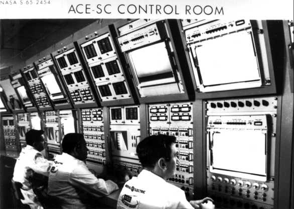
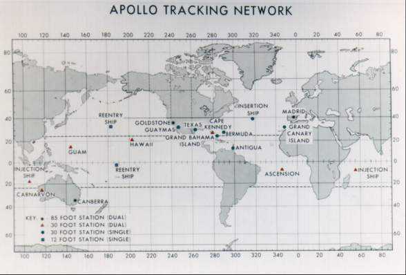
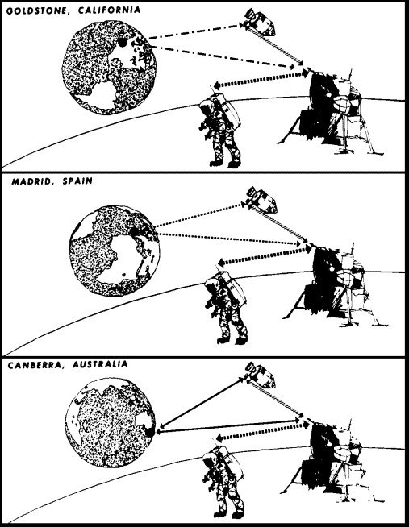
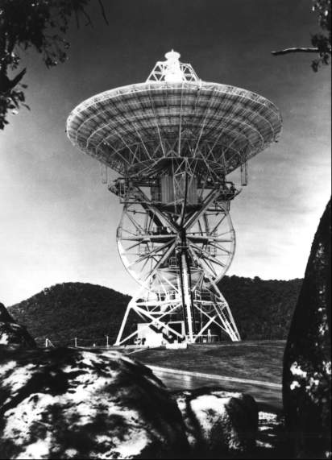
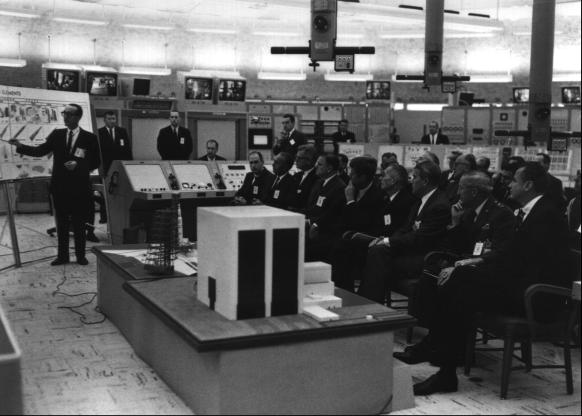

Shortly after Brainerd Holmes joined NASA Headquarters as its first Director of Manned Space Flight, he and Administrator James Webb contracted with General Electric for studies on reliability and quality assurance, analysis and integration of the complete Apollo vehicle (spacecraft and booster), and procurement and operation of ground equipment to check out and certify the vehicles for flight. To fulfil this task, General Electric engineers would have to immerse themselves in the day-to-day activities of the space flight centers. No one in the field complained about General Electric's role in the reliability, quality assurance, and checkout functions, since the centers wanted all the help they could get in these areas. But the suggestion that a contractor should tell government employees how to put their vehicles together (the integration clause of the contract) to fly a mission was resisted. Edward S. Miller of General Electric said: "The contractor role in Houston was not very firm. Frankly, they didn't want us. There were two things against us down there. No. 1, it was a Headquarters contract, and it was decreed that the Centers shall use GE for certain things; and [No. 2] they considered us Headquarters spies." For some time after the contract award, just exactly what General Electric would do was not exactly clear.3
In February 1962, General Electric engineers began holding monthly review meetings, but they met with little success in selling their plans for spacecraft and launch vehicle integration. After several of these gatherings, contractor officials complained in August that there was "little understanding by NASA people as to the role of GE." That same month, General Electric nevertheless transferred 15 of its engineers to Houston. To get the contractor into Huntsville operations, the manager of the Headquarters office for integration and checkout accompanied several General Electric employees to Marshall to explain "GE roles in [the] Apollo program" to the center and Saturn contractor officials. Neither Boeing nor Chrysler wanted any "unannounced visits" by General Electric engineers, especially since the two principal Saturn contractors could not foresee any way in which General Electric could be of assistance to them. Marshall and the contractors were assured that all visits would be arranged in advance,4
General Electric's other major task, however - designing, setting up, and operating ground equipment to check out the flight vehicles - was accepted at the field centers. Manned Spacecraft and Launch Operations Center representatives said they were satisfied with the contractor's work in this area, and Marshall asked for more help. Even here, however, there were some reservations about turning General Electric loose. The Apollo manager in Houston, for example, warned the company, in capital letters, to do nothing unless it had "A WORK ORDER APPROVED BY THE APOLLO SPACECRAFT PROJECT OFFICE."5
Eventually, the General Electric contract called for almost a thousand persons, more than half of them stationed at Daytona Beach, near the Cape launch site, where they designed and assembled the ground checkout equipment needed to test the space vehicles for flight safety. The remainder went to the three NASA centers and to contractor plants, helping to ensure the receipt of good-quality hardware and performing specialized studies when they had a "work order."6

General Electric employees monitor activities of a spacecraft test in the automatic-checkout-equipment spacecraft control room in 1965.
Webb had set up the General Electric contract to provide NASA Headquarters with the technical specialists to watch over and participate in Apollo's far-flung development activities in both government and contractor establishments. He also wanted a bevy of engineering system specialists near at hand to assist Holmes in making technical decisions. Webb asked Frederick R. Kappel, President of American Telephone & Telegraph Company, to form a group to provide this talent for Apollo. Bellcomm, Inc., the new AT&T division, began operating alongside Holmes' NASA Headquarters manned space flight engineers in March 1962. Holmes immediately directed the contractor engineers to work with Joseph Shea, his Office o Systems chief, first on the study of the mode issue and then on the defense of NASA's decision to land on the moon via the lunar-rendezvous method.
Once the route studies were completed, Shea decided that Bellcomm engineers should dip into mission planning and produce some "reference trajectories" - a careful analysis of everything involved in flying the space vehicles from the earth to the moon and back. But when he took his newly formed Apollo Trajectory Working Group to a meeting in Texas, Shea met with resistance. John P. Mayer, speaking for the mission planners in Houston, said that his group had been doing this kind of work for the past two years. He told Shea bluntly that interjecting Bellcomm into mission planning was just one more attempt on the part of Headquarters to move into operational areas that properly belonged to the centers. Shea explained that Bellcomm would be a supporting group and would not try to second-guess the centers.7
But many in Houston looked on Bellcomm representatives who attended many of the subsequent trajectory meetings as being, like General Electric, "Headquarters spies." What continued to rankle Mayer and his colleagues in trajectory analysis was that Bellcomm, not always on the scene, simply could not keep up with the latest operations data, mission rules, and guidelines. As a result, Bellcomm sometimes gave Headquarters out-of-date information, and the field centers had to spend much-needed time in correcting misconceptions. Nevertheless, Bellcomm, never numbering more than 200 persons, did produce some useful evaluations on almost every aspect of Apollo throughout the decade. These engineers were among the first to push for the pinpoint lunar landings that were so successfully carried out after the first landing mission.8
Along with the mounting strength in contractor personnel, the Manned Space Flight Office in Washington (only a handful of people in Mercury's early days) also increased in number. By February 1963, Holmes had a 400-man force, presided over by himself and his deputies, George Low and Joseph Shea. Low managed space medicine, launch vehicles, and office operations; Shea concentrated on engineering matters.9
Much of the energy of the Headquarters office and its contractors during 1963 was devoted to drafting an Apollo Systems Specification book. The aim of this document was to lay out the objectives, to define the technical approach for implementing these objectives, and to establish performance requirements. The task was difficult because many systems, especially those in the lunar module and the advanced command module, simply had not been studied in enough detail for anyone to state positively what was expected. Numerous pages were stamped "TBD" - to be determined. But there was some clarification of policy for Apollo. Up to this time, the main objective had been expressed only as landing a man on the moon and returning him safely before the end of the decade. The specification book intimated, for the first time, that exploration of the moon would not be limited to a single mission.10
A number of interesting specifications in the manual - intended for use as the Headquarters "bible" for all parties in the development of Apollo - remained valid throughout the program. For example, all parts of the spacecraft would be designed to minimize the fire hazards inherent in the use of pure oxygen atmosphere that North American had been directed to incorporate in the command module in August 1962. North American was instructed to design the command module so a single crew member could return the craft safely to earth from any point in the mission. And the service module would provide all spacecraft propulsion and reaction control needs (spacecraft attitude changes in pitch, roll, and yaw from lunar transfer until it was jettisoned just before the spacecraft reentered the earth's atmosphere.11
Hand in hand with definition of the system specifications were the systems review meetings sponsored by the Office of Manned Space Flight. The meetings had a two-fold aim: to gather information for the specifications book and to make sure that the centers coordinated all activities in Apollo's complex development. At the first of these meetings, Shea found a gap in this coordination. Marshall was having trouble with F-1 engine combustion instability, yet an offer to help from Lewis Research Center - NASA's leading propulsion organization - had been ignored.12
Other instances of this lack of cooperation may have occurred, but the three manned space flight centers had moved closer together, partially to defend the mode choice and partially to stave off the intrusion of General Electric into vehicle integration. On top of that, each center had a great many questions that needed to be answered by the other field elements. And they were working together on policies and mission rules that became the foundation for the lunar landing program. At a mission planning panel meeting, some of these ground rules emerged: two crewmen would land on the moon and one man would remain with the command module in lunar orbit; the lunar lander could stay on the moon from 21 to 48 hours; launch from the earth would take place in daylight to simplify recovery operations in the event of an abort; launch to the moon from earth orbit would begin within 4 1/2 hours because of the boil-off characteristics of liquid hydrogen in the S-IVB stage; and the first lunar mission would be only a loop around the moon and return, since too little was known about the start and restart capabilities of the service module engine.13
Most of these committees - and there were many, many of them - took turns meeting at Houston, Huntsville, and Canaveral. By May 1963, the panels were so numerous that Holmes realized that something had to be done to keep track of them. He told Shea to form a Panel Review Board* as one more Headquarters tool for managing Apollo.
Shea convened the first meeting of the board in August 1963 at the Cape, and representatives of each panel summarized their past activities. The next item on the agenda was a session on standardizing the Interface Control Documents (discussed in the previous chapter) and the selection of Marshall as the repository for this documentation, to make sure it would be available for reference by the participating organizations. These periodic board meetings, besides keeping the Office of Manned Space Flight closer to the mainstream of center activities, gave the specialists a chance to learn what their colleagues were doing and an opportunity to oversee progress, costs, and schedules. Areas that might delay Apollo were discovered more quickly and dealt with more rapidly.14

Apollo tracking network in 1966. Radar stations with large antennas for continuous tracking and communications were at Goldstone, California; Madrid, Spain; and Canberra, Australia.
NASA Headquarters stepped in on occasion to arbitrate among the centers. At one time, telecommunications threatened to become a formidable issue in Apollo, with Houston, Goddard, and the Jet Propulsion Laboratory vying for control of the tracking network. The earth-circling band of stations - about a dozen and a half - used in Mercury were not equipped for the deep space communications of Apollo, but by 1963 a capability was developing in the unmanned spacecraft programs that promised to be suitable. Jet Propulsion Laboratory intended to build two sets of 26-meter dish antennas, with two antennas at each of three sites - Goldstone, California; near Canberra, Australia; and near Madrid, Spain - that would provide continuous communications coverage of the moon. One set would be equipped with the more advanced unified S-band system (a system that tied the signals for tracking, telemetry, voice, television, and command into a single radio carrier) for controlling, tracking, and acquiring data from unmanned spacecraft, like Mariner and Surveyor, in deep space. This system consolidated the functions of the many transmitters and receivers characteristic of Mercury into one.

Communications with the moon as the earth turned. Astronauts on the moon's surface also could talk to one another.
The Mercury tracking stations, with 9-meter dishes and the new S-band radar, would communicate with the Apollo spacecraft in earth-orbital flight. Once the vehicle had traveled 16,000 kilometers into space, the 26-meter antennas - spaced equidistantly at 120 degrees longitude around the earth so one of the three always faced the moon - would take over. Later, the Jet Propulsion Laboratory was to build a 64-meter antenna at Goldstone (which then became the Goldstone Mars station) that gave Apollo clearer communications, especially in television reception. The laboratory wanted to construct two more of these stations, but the costs were too great. The British government, however, had a radar station with a 64-meter antenna at Sydney, Australia, that might be used.

The "big dish" at Canberra points toward space.
Although some of the finer points on communications and control were haggled over for the next 15 months, in March 1963 NASA Associate Administrator Robert Seamans settled the basic issue of who was in charge and when. He assigned Goddard as the technical operator of the Manned Space Flight Network; during Apollo missions, the Manned Spacecraft Center would assume operational control. The Jet Propulsion Laboratory would be in charge of all unmanned mission communications, turning its facilities over to the other centers during manned flights. By the end of 1964, Headquarters had the communications and tracking requirements and assignments for Apollo pretty well in hand.15
Other NASA Headquarters offices besides Manned Space Flight assumed lead roles for Apollo - especially in the area of scientific interest. Because of the complex engineering task, no one really expected that science would do more than ride piggyback. Almost the only concern the Houston center displayed was in the composition of the lunar surface soil, which would affect the design of the landing gear. Director Robert Gilruth sent a representative to a meeting of NASA's Space Science Steering Committee to ask for help on the soil question and to remind the members that whatever scientific equipment they might develop would have to be adaptable to the lunar spacecraft.16 But there was one area in which the scientists could be of more immediate assistance. How to land Apollo on the moon had been decided; how to get it there would be worked out by the guidance experts. Where to land it and what the astronauts could do after they got there was still unsettled.
Shortly after President Kennedy had issued the lunar landing challenge, Homer Newell of the Headquarters science office had asked Harold C. Urey of the University of California at San Diego to suggest the best scientific sites for lunar landings. Urey told Newell of five kinds of lunar terrain of particular scientific interest:
High latitudes - to check for possible temperature differences from equatorial areas. [Professor Harrison Brown had theorized, Urey added, that water might exist beneath the surface there.]Maria - to try to determine the depth of holes where great collisions had taken place and, on a second landing, to discover the composition of the material in such places as the Sea of Tranquillity.
Inside a large crater - to look at an area, probably Alphonsus, where observers had seen gases rising from the interior.
Near a great rille, or "wrinkle," in a maria - to attempt to find out what had caused it. [It had been suggested that water, rising from the interior, had cracked the surface as it dried.]
In a mountainous area - to observe crater walls.17
In 1962, a two-month summer study conference in Iowa was cosponsored by NASA and the National Academy of Sciences. The resulting deliberations, published as A Review of Space Research, outlined the broad objectives of a science program for Apollo. Conclusions were that the most important scientific tasks foreseeable for manned lunar explorations were educated observations of natural phenomena, the collection of representative samples of surface materials, and the installation on the moon of certain scientific monitoring instruments.
Late in 1963 and early in 1964, NASA Headquarters established science planning teams to recommend investigations of the lunar surface, designs for prototype long-life geophysical instruments, requirements for astronaut training, the building of a receiving laboratory for handling returned samples, and plans for the reduction and interpretation of geological, geophysical, solar, selenological, astrophysical, and other scientific data. Although the work of these teams was barely visible to outside scientists, NASA had some of the best specialists in the country helping to formulate its general objectives on the lunar science program.18
Five fundamental areas emerged as having the greatest potential:
Studies of the lunar lithosphere, the solid moon itself, its chemical and physical constitution, and the implications this should have for its origin in history.Investigations of the gravitational and magnetic fields and forces around the moon, including experiments for the possible detection of gravitational waves.
Considerations of particles like solar protons and cosmic radiation, together with their effect on the lunar gravitational field and magnetosphere.
Establishment of astronomical observatories on the moon.
Studies of proto-organic matter, including the possibilities for exobiology.19
Realistically, everyone realized that the first manned visit to the lunar surface, limited to no more than 24 hours, would hardly satisfy the desires of most scientists. With proper planning, however, a bonanza of scientific results could be gleaned even from that first landing. In June 1964, the mineralogy and petrology planning team underscored these hopes by drawing an analogy between the lunar voyage and another historic event:
Some time before the year 1492, a group of workmen were standing in a shipyard looking at a half-constructed craft. One of them said "It won't float"; another said "If the sea monsters don't get it first, it will fall off the edge"; a third, more reflective than the others, said "What do they want to go for, anyway?"The Apollo Project is primarily a glorious adventure, in which man will for the first time tread upon the surface of another celestial body. It will be a magnificent feat, and a milestone in the history of the human race. No other purpose or justification is necessary.
Important scientific knowledge will result from the landing. First among the scientific objectives of the Apollo mission will be the return of samples of the lunar surface materials. The study of such samples will tell us of the thermodynamic conditions under which they were formed; whether the moon is a differentiated body or not; and perhaps whether it was captured by the Earth or was formed from it in the distant past.20
Most of the work of NASA Headquarters on behalf of the scientific aims of Apollo by the end of 1964 had little impact on the organizations and contractors developing the program. All that the builders needed to know was how much space to allow - and this would be minimal - and a general idea of the future plans. When the time came to fly the missions, however, the planners, astronauts, and flight preparations technicians would have to pay more attention. The outline of what Apollo could contribute to science had been sketched; the details would be filled in later.
Perhaps the Headquarters action that had the most significant effect on Apollo was a change of leadership in the Office of Manned Space Flight. When NASA had signed Grumman in 1962 to develop the lunar module, Holmes had wanted the agency to ask for a supplemental appropriation for Gemini and Apollo costs (see Chapter 4), but NASA's top administrators - Webb, Dryden, and Seamans - had refused. Webb also refused to transfer funds from other programs to manned space flight. Holmes and Webb had different views of management methods and of the priority of the manned program versus the rest of the space effort. The Administrator feared an all-out effort to land a man on the moon - one that subordinated all else - would endanger NASA's balanced program of seeking U.S. preeminence in space science and technology. The Manned Space Flight Director felt he had an overriding mandate from the President to win a race to the moon. The question of funds and priorities was taken to the White House. When President Kennedy cited the importance of the lunar landing, Webb agreed that it was important but said that he would not take responsibility for a program that was not properly balanced. Kennedy accepted his position.
Then in the first half of 1963 came the realization that Project Gemini was suffering from more technical troubles than had been anticipated, which would push the costs of that program past the billion mark, almost double the original estimates. Gemini schedule stretchouts followed. Holmes testified in March congressional authorization hearings that the administration refusal to ask for a supplemental appropriation had delayed the Gemini and Apollo programs four or five months. In the renewal of Holmes-Webb differences over priorities, the President again backed his space program administrator. Shortly thereafter, NASA announced that Holmes was returning to industry.21
Moving to concentrate his resources on resolving Gemini and Apollo problems, Administrator Webb had decided to conclude the Mercury program after the ninth mission and to realign NASA organization throughout Headquarters and the responsive field center elements. One of the first requirements was to find a new leader for manned space flight. After considering several candidates, Webb asked Ruben F. Mettler, President of Space Technology Laboratories, Inc., to take the job. Mettler refused but recommended George E. Mueller (pronounced "Miller"), his Vice President for Research and Development. Webb accepted the recommendation, and Mueller became NASA's Associate Administrator for Manned Space Flight. With a doctorate in physics (Ohio State, 1951) and 23 years academic and industrial experience, Mueller had made many contributions to the country's missile and spacecraft programs.
Mueller had worked on Air Force manned space flight studies as early as 1958; later his laboratory had provided NASA with data that helped in making the Apollo mode decision. Furthermore, Mueller was familiar with NASA's relations with industry, both at Headquarters and the field centers, and had studied ground support equipment problems and tracking network issues as a system analysis contractor. But most useful to NASA was his recent work with the Air Force on performance, schedule, and budget constraints for the Minuteman missile. Derivatives of this background - program control offices, schedules and resources planning, and the subsystem manager technique - were to be incorporated into Apollo to strengthen Headquarters and field center control over cost, configuration, and schedules.22
Soon after joining NASA, Mueller asked Air Force Brigadier General Samuel C. Phillips to help him apply to Apollo the kind of configuration and logistics management procedures established for Minuteman. Phillips brought with him about 20 officers to fill key positions. Mueller realized that this sudden infusion of Headquarters-level personnel might be detrimental to relations between his office and the field activities. To forestall any resentment, he invited center directors Gilruth, Wernher von Braun, and Kurt Debus to be his houseguests, to get to know them informally and to discuss with them his plans for Apollo. Mueller then visited Huntsville, Houston, and Canaveral. After completing the circuit, he began pressuring the field elements to conform to a long-range plan of program management.23
In his attempts to inaugurate effective Headquarters control of Apollo, Mueller still faced vestiges of field center autonomy. The intercenter groups had gone far in working out system specifications and planning for vehicle integration; in Mueller's view, however, they had not gone far enough. To get to the moon by the set time, he told von Braun, Gilruth, and Debus, Headquarters would have to be the final authority in administering a unified and coordinated plan of program control.24
Mueller decided to make some changes in one management tool instituted by Holmes in late 1961. In a meeting of the Manned Space Flight Management Council#explanation2``** on 24 September 1963, Mueller said that too many persons were on the council and that it would henceforth be composed only of himself, von Braun, Gilruth, and Debus. This new, slimmed-down body would act as a board of directors in making decisions and managing Apollo and would expect to be frequently and thoroughly briefed on all Apollo matters, down to the nuts and bolts, by top technical managers. To make sure that the industrial leaders in the program were kept abreast of progress and problems, Mueller also intended to form an Apollo Executives Committee, of company presidents, which would tour the appropriate NASA facilities and then hold periodic reviews thereafter. These men, Mueller knew, could put pressure on their people to solve any development problems.25
Webb, Dryden, and Seamans recognized in mid-1963 that NASA (and Apollo) had grown too large for Seamans to continue as "operating vice president," which he had been since 1961. They decided to give Seamans three "Associate Administrators" for specific activities: Mueller would manage the Office of Manned Space Flight and the three centers working on manned missions - Huntsville, Houston, and Canaveral. Homer Newell and Raymond L. Bisplinghoff would hold similar positions for the Office of Space Science and Applications and the Office of Advanced Research and Technology. Mueller revamped his own office, dividing it into five suboffices (the five-box system) - (1) program control, (2) systems engineering, (3) test, (4) flight operations, and (5) reliability and quality - for each major program, Apollo and Gemini, reporting to a program director who would in turn answer to Mueller. Mueller kept the job of acting Apollo manager for himself and gave Gemini responsibility to Low. The manned spacecraft centers were directed to organize their program offices accordingly.26
While the reorganization was going on, Mueller asked two veterans in his office, John Disher and Adelbert Tischler, for a study of Apollo's chances off landing on the moon by 1970. From the information they gathered on the existing technical problems, Disher and Tischler concluded that prospects were one in ten. After reading this pessimistic report, Mueller knew the adverse schedule trend would have to be reversed. When MSC Director Gilruth sent a representative to Headquarters in late September to find out if the four manned Saturn I flights Washington had planned could be reduced to three, Mueller saw an opportunity to begin tightening the schedules. He reviewed a Bellcomm study that recommended terminating the Saturn I launch vehicle program after the tenth flight, which Marshall estimated would save $280 million, and concluded that there was no reason to fly any manned Saturn I vehicles. Ironically, NASA had just selected 14 new pilots, bringing corps strength to 30.*** Administrator Webb worried briefly that the astronauts might not get enough space flight experience with the cutback, but Mueller reminded him that Gemini would fill that gap. Mueller added that there was a much better chance of beating the deadline if NASA had to man-rate only two boosters, the Saturn IB and V, instead of three.27
Hard on the heels of the Saturn I decision came another pronouncement that was just as startling - if not more so - to the field centers. At a late October meeting of the Management Council, Mueller told Debus, von Braun, and Gilruth that "we can now drop this step-by-step procedure" of flight-testing. All parts of the spacecraft and launch vehicle would be developed and thoroughly tested at manufacturing plants and test sites before being delivered to the Cape as ready-to-fly hardware. There would no longer be any need for piece-by-piece, stage-by-stage qualification flights of the vehicles. Each launch was to be prepared as though it were the ultimate mission, to avoid dead-end testing, with its narrow objectives and hardware components not intended for the lunar missions.28
Although the chances for getting to the moon within the allotted time may have improved, Apollo now had more launch vehicles and pads than were needed to do the job. When contracts were awarded, from late 1961 through 1962, step-by-step testing had been the norm. Hardware was purchased and facilities were built to carry out this time-tested practice. Mueller's all-up decision changed the rules, limited the number of Saturn I launches, and made it likely that not all of the Saturn IBs contracted for would be flown in mainline Apollo. These results raise an interesting, though moot, question. If this decision had been made before the contracts were awarded, would there have been both a Saturn I and a IB? An earth-orbital and lunar-orbital version of the command module? Later, NASA had to find some useful employment for the excess vehicles, eventually assigning them to the Skylab and Apollo-Soyuz programs. But this did not worry Mueller in late 1963. His job was to figure out how to get men on the moon within the time set by President Kennedy.

On 16 November 1963 in Cape Canaveral's Blockhouse 37, NASA's new manned space flight chief George Mueller briefed left to right, front row seated) George Low, Kurt Debus, Robert Seamans, James Webb, President John Kennedy, Hugh Dryden, Wernher von Braun, Gen. Leighton I. Davis, and Senator George Smathers on Apollo program plans. The models on the table - Vehicle Assembly Building, Saturn V launch vehicle on crawler, and mobile service tower - represented key elements in the Apollo mission.
Shortly after Headquarters reorganized for improved management of Apollo and Mueller made his changes to enhance the chances for meeting schedules, the whole nation was wracked by a series of traumatic events. President Kennedy was assassinated, and his alleged killer was murdered while the country watched. No one who had access to a television set can ever forget those days. In the soul-searching that followed, national goals and social priorities were questioned. Periodicals such as Science were soon attacking what they called NASA's misplaced priorities, and books like The Moon-Doggle were expressing disillusionment with Apollo.29
Although caught up in the grief of the times, the Apollo worker - manager, engineer, technician - had been and still was deluged by the complex tasks inherent in developing and qualifying the vehicles.
* Board membership consisted of: from the Headquarters Office of Manned Space Flight (OMSF), Deputy Director, Systems, and Deputy Director, Programs; from Marshall (MSFC), Deputy Director, Research and Development, and two Associate Directors; from the Manned Spacecraft Center (MSC), Deputy Director, Development and Programs, and Deputy Director, Mission Requirements and Flight Operations; and from the Launch Operations Center (LOC), Assistant Director, Plans and Project Management. The authorized panels and their cochairmen were: Crew Safety, Joachim P. Kuettner (MSFC) and Alfred D. Maniel (MSC); Electrical Systems Integration, Hans J. Fichtner (MSFC) and Milton G. Kingsley (MSC); Flight Mechanics, Rudolf F. Hoelker (MSFC) and Calvin H. Perrine (MSC); Launch Operations, Rocco A. Petrone (LOC) and Walter C. Williams (MSC); Mechanical Design Integration, Hans R. Palaoro (MSFC) and Lyle M. Jenkins (MSC); Mission Control Operations, Fridtjof A. Speer (MSFC) and John D. Hodge (MSC); and Onboard Instrumentation, Otto A. Hoberg (MSFC) and Alfred B. Eickmeier (MSC).
** The council, established on 21 December 1961, originally consisted of Holmes, his directors in OMSF (Charles H. Roadman, Aerospace Medicine; Milton W. Rosen, Launch Vehicles and Propulsion; and William E. Lilly, Program Review and Resources Management), and his deputies (Shea, Systems Engineering, and Low, Spacecraft and Flight Missions); Wernher von Braun, Director, and Eberhard F. M. Rees, Deputy Director (MSFC); and Gilruth, Director, and Walter C. Williams, Associate Director (MSC). By 27 February 1962, James E. Sloan, Holmes' Director of Integration and Checkout, and Kurt Debus, Director, LOC, had been added. On 26 and 27 February 1963, three new names appeared on the council rolls; James C. Elms, Deputy Director, Development and Programs (MSC); Albert F. Siepert, Deputy Director (LOC); and Robert F. Freitag, Director, Launch Vehicles and Propulsion (OMSF - replacing Rosen). During 1963, George M. Knauf took over from Roadman as Director of Aerospace Medicine.
*** The astronauts in the third group (announced 18 October 1963) were Edwin E. Aldrin, Jr., William A. Antlers, Charles A. Bassett II, Alan L. Bean, Eugene A. Cernan, Roger B. Chaffee, Michael Collins, R. Walter Cunningham, Donn F. Eisele, Theodore C. Freeman, Richard F. Gordon, Jr., Russell L. Schweickart, David R. Scott, and Clifton C. Williams, Jr. As in the second group, only two (Cunningham and Schweickart) were not members of the military services.
3. MSC, "Manned Spacecraft Center, Atlantic Missile Range Operations: Facilities, 1959-1964," 15 April 1963; NASA, Astronautics and Aeronautics, 1963, pp. 195-96; Barton C. Hacker and James M. Grimwood, On the Shoulders of Titans: A History of Project Gemini, NASA SP-4203 (Washington, 1977), chap. 6 through 9; House Committee on Science and Astronautics, Astronautical and Aeronautical Events of 1962: Report, 88th Cong., 1st sess., 12 June 1963, p. 15; James E. Webb, "Statement of the Administrator, [NASA], Regarding Selection of a Contractor for Overall Checkout of the Project Apollo Space Vehicle," 12 March 1962; House Committee on Science and Astronautics, Subcommittee on Manned Space Flight, 1964 NASA Authorization: Hearings on H.R. 5466 (Superseded by H.R. 7500), 88th Cong., 1st sess., 1963, pp. 1099, 1101, 1103-04; John H. Disher, interview, Washington, 26 Jan. 1967; Ladislaus W. Warzecha, interview, Houston, 14 Jan. 1970; Webb to D. Brainerd Holmes, no subj., 5 Jan. 1962; NASA, "Procurement Plan for Project Apollo Space Vehicle Integration Analysis, Reliability Assessment and Checkout," February 1962; Charles W. Frick to Robert O. Piland, "Comments on Agenda Items for the Management Council Meeting," 23 March 1962; Dave W. Lang to Wesley L. Hjornevik et al., "Contract clause," 9 April 1962; Webb, "Determination and Findings: Authority to Negotiate Class of Contracts," 25 July 1962; Edward S. Miller, interview, Valley Forge, Pa., 18 Feb. 1970.
4. Percy F. Hurt to Dep. Proj. Mgr., ASPO, "Trip Report of Percy Hurt to Syracuse, New York, to Attend GE Progress Review Meeting, on August 14, 1962," 16 Aug. 1962; H. L. Schimmack to Paul F. Weyers, 24 Aug. 1962, with enc., "Integration Assignment Activity: 4 August-22 August 1962"; Charles Appelman, telephone interview, 18 April 1972; James E. Sloan memo, "Introductory meetings with MSFC contractors to discuss G.E. roles in Apollo program (Boeing and Chrysler) held on October 2, 1962," 4 Oct. 1962, with encs.; Henry P. Yschek to North American, Attn.: H. H. Cutler, "Letter Contract NAS 9-150, Right of Access of Apollo Integration Contractors," 10 April 1962.
5. Minutes of the third meeting of the Systems Checkout Design Review Board, 1 Nov. 1962, p. 2; Frick to NASA Hq., Attn.: Sloan, "Transmittal of General Electric Work Statement and Manpower Requirements for FY-63," 3 Dec. 1962, with enc. (emphasis in original).
6. William Collins, Jr., to Walter L. Lingle, "Discussion of language changes under the General Electric contract at a meeting in Mr. Holmes's office on Friday, June 28, 1963," 1 July 1963; George E. Mueller to MSC, MSFC, and LOC, Attn.: Dirs., "Realignment of General Electric Company Contract," 30 Sept. 1963; Stanley M. Smolensky, minutes of OMSF Staff Meeting, 11 Jan. 1963; Melvin E. Dell to Yschek, "NAA contractual change to establish the Apollo Support Department of the General Electric Company as an associate contractor for NAA," 30 Dec. 1963; J. Thomas Markley to Mgr., ASPO, "Present use of GE," 20 Jan. 1964; General Electric Support Dept., "Apollo Support Program, Monthly Progress Report: March 1963," Daytona Beach, Fla., 10 April 1963 (cf., e.g., idem, "ACE-S/C Reliability Quarterly Status Report, Third Quarter 1965," 15 Oct. 1965.
7. House Committee on Science and Astronautics, Subcommittee on Manned Space Flight, 1964 NASA Authorization Hearings, pp. 372-73, 1076, 1091, 1098-1101; Paul E. Purser memo, "Operations of OMSF Office of Systems and Bellcomm," 14 Jan. 1963, with encs.; minutes of Apollo Reference Trajectory Working Group Meeting No. 1, 3 Jan. 1963; John P. Mayer to Dir., MSC, "First meeting of Apollo Trajectory Working Group, January 3, 1963," 7 Jan. 1963, with encs.
8. Joseph F. Shea to Julian M. Wrest, 7 Nov. 1963; Shea to Brig. Gen. Samuel C. Phillips, 25 Nov. 1964; Purser memo, 14 Jan. 1963; Jay Holmes, minutes of OMSF Staff Meeting, 22 Nov. 1963; Carl R. Huss to JSC History Office, "Comments on Draft Copy of 'Chariots for Apollo: A History of Lunar Spacecraft,'" 2 Nov. 1976.
9. NASA, "Holmes Names Two Deputies," news release 63-32, 20 Feb. 1963; George M. Low, interview, Houston, 7 Feb. 1967.
10. NASA, "Apollo System Specification," OMSF directive M-D M 8000.001, 2 May 1963, pp. 1-1, 1-2, 2- 1, 2-2.
11. Ibid., pp. 4.3-1, 4.3-2; letter, Carl D. Sword to North American, "Contract Change Authorization No. 1," 28 Aug. 1962.
12. Low to Robert R. Gilruth, 26 Dec. 1962, with enc.; Smolensky, OMSF Staff Meeting, 11 Jan. 1963; D. B. Holmes to Wernher von Braun, "Combustion Instability of F-1 Engine," 26 Jan. 1963; von Braun to D. B. Holmes, 11 March 1963.
13. MSC-ASPO, "Consolidated Meeting Plan, Initial Issue," 18 Feb. 1962; Walter C. Williams to MSFC, Attn.: von Braun, "Flight Control Operations and Ground Support Requirements for Project Apollo," 1 March 1963; Williams to von Braun, 7 March 1963; "Mission Control Operations Panel (MCOP)," n.d. (probably August 1963); Robert V. Battey, minutes of Apollo Mission Planning Panel organization meeting, 27 Feb. 1963; Mayer memo, "Charter for Apollo Spacecraft Mission Trajectory Sub-Panel," 26 March 1963; abstract of Apollo Mission Planning Meeting No. 1, 27 March 1963; R. A. Newlander to Actg. Mgr., RASPO/LEM, "Trip report of R. A. Newlander to MSC on March 27 & 28, 1963 to attend Mission Planning Panel and Trajectory Sub-Panel Meetings," 1 April 1963; Battey to Action Committee, "Errata to Abstract of Mission Planning Panel Meeting No. 1," 1 April 1963; Mayer memo, "Preliminary Mission Rules for Use in Apollo Mission Trajectory Calculations," 30 April 1963, with encs.; W. Schoen and G. Scheuerlein to Joseph G. Gavin, Jr., et al., "Meeting of Spacecraft Operations Analysis Working Group at MSC, Houston on May 1, 1963," 7 April [sic] 1963.
14. D. B. Holmes to MSC, MSFC, and LOC, for Gilruth, von Braun, and Kurt H. Debus, "Establishment of a Panel Review Board," 10 July 1963, with enc., Holmes memo, "Panel Review Board," 10 July 1963; agenda, Panel Review Board Meeting 63-1, 9-10 Aug. 1963, with encs.; minutes of Panel Review Board Meeting 63-1, LOC, 9-10 Aug. 1963; agenda, Panel Review Board Meeting 63-2, 25 Sept. 1963, with encs.
15. N. A. Renzetti, ed., A History of the Deep Space Network, 1, From Inception to January 1, 1969, JPL technical report 32-1533 (Los Angeles, 1 Sept. 1971), pp. 13-16, 25; Renzetti, telephone interview, 13 June 1972; Gerald M. Truszynski memo for file, "Meeting at MSC on Location of European DSIF Station," 3 Dec. 1962; Goddard Space Flight Center, "A Ground Instrumentation Support Plan for the Near-Earth Phases of Apollo Missions," GSFC X-520-62-211, 23 Nov. 1962; Corliss, Histories of STADAN, MSFN, and NASCOM, pp. 149, 162-259; Robert C. Seamans, Jr., to William H. Pickering and Harry J. Goett, 11 March 1964, with enc., "Management Plan for the Manned Space Flight Network," 5 Feb. 1963; Seamans memo, subj., as above, 11 March 1963, with enc.; Dennis E. Fielder to Chief, Flight Operations Div. (FOD), "Network management and control for manned space flight," 30 Oct. 1963; Henry E. Clements to Chief, FOD, "GSFC's presentation on network control," 31 Oct. 1963; Gilruth to GSFC, Attn.: Goett, "Computation and Data Flow Integrated Subsystem Testing Interface," 28 May 1964, with enc., "Computation and Data Flow Integrated Subsystem (CADFISS) Testing Interface between GSFC and MSC for the Gemini and Apollo Programs," n.d.; Mueller and Edmond C. Buckley to KSC, MSC, MSFC, and GSFC, Attn.: Dirs., "Assurance of Compatibility between Apollo Spacecraft, Launch Vehicle and the supporting Tracking and Data Acquisition Network," 30 July 1964; Buckley to Dep. Assoc. Admin., NASA, "Division of Responsibility between GSFC and MSC on Computation for the Manned Space Flight Network," 2 Oct. 1964, with enc.; Bernard Lovell, The Story of Jodrell Bank (New York: Harper and Row, 1968).
16. Robcrt O. Piland to Dir., MSC, "Space Task Group representation on Lunar Sciences Subcommittee of the NASA Space Sciences Steering Committee," 7 July 1961; Gilruth to NASA Hq., Attn.: Low, "Designation of liaison member for the Lunar Sciences Subcommittee of the Space Sciences Steering Committee," 11 July 1961.
17. Harold C. Urey to Homer E. Newell, 19 June 1961.
18. Leonard D. Jaffe, secretary, minutes of Ad Hoc Working Group on Apollo Scientific Experiments and Training, 27 March 1962; Vern C. Fryklund. Jr., to MSC, Attn.: Gilruth, "Scientific Guidelines for the Apollo Project," 8 Oct. 1963; National Academy of Sciences, A Review of Space Research, NAS-NRC 1079 (Washington, 1962), report of summer study under auspices of NAS at State Univ. of Iowa, 17 June-10 Aug. 1962; Edward M. Davin. ed., "Apollo Lunar Science Program: Report of Planning Teams," pt. 1, "Summary," December 1964.
19. Shea memo for record, no subj., 26 March 1962; Fryklund letter, 8 Oct. 1963; Willis B. Foster to Dir., Program Review and Resources Management, "Submission for 1964 President's Annual Report," 30 Oct. 1964; Davin, ed., "Planning Teams Report," pp. 4-5.
20. Eugene N. Cameron et al., introduction to "Preliminary Report on the Sampling and Examination of Lunar Surface Materials," 22 June 1964, in Appendix to Davin, ed.. "Planning Teams Report."
21. NASA, "Preliminary History of the National Aeronautics and Space Administration during the Administration of President Lyndon B. Johnson, November 1963-January 1969," final ed., 15 Jan. 1969, pp. I-49 through I-52; D. Brainerd Holmes, interview by Don Neff, Time, Inc., 18 Jan. 1969; House Committee on Science and Astronautics, Subcommittee on Manned Space Flight, 1964 NASA Authorization: Hearings on H.R. 5466, 88th Cong., 1st sess., no. 3, pt. 2(a), 1963 (March 7), pp. 242-243; Robert Sherrod notes on interview of David Williamson, Asst. Assoc. Admin., NASA, 10 April 1972; Hacker and Grimwood, On the Shoulders of Titans, p. 128; NASA, "Holmes Returns to Industry as Mercury Concludes," news release 63-133, 12 June 1963; Richard A. Smith, "Now It's an Agonizing Reappraisal of the Moon Race," Fortune, November 1963, pp. 128, 268; John W. Finney, "NASA Loses Chief of Moon Project," New York Times, 13 June 1963, pp. 1-2.
22. Senate Committee on Aeronautical and Space Sciences, NASA Authorization for Fiscal Year 1964: Hearings on S. 1245, 88th Cong., 1st sess., pt. 2, pp. 774-75; Saul Ferdman to Grimwood, 15 Nov. 1976; Joseph L. Myler, UPI, "Mueller to Head Program to Land Men on Moon," Washington Post, 24 July 1963; Mueller interview, Washington, 27 June 1967; NASA, "George E. Mueller," biographical data, 8 Jan. 1964; Senate Committee on Aeronautical and Space Sciences, NASA Authorization for Fiscal Year 1965: Hearings on S. 2446, 88th Cong., 2nd sess., 1964, pp. 467-68.
23. Jay Holmes, minutes of OMSF Staff Meeting, 27 Dec. 1963; NASA, "NASA Appoints General Phillips to Assist in Apollo Program Management," news release 63-287, 31 Dec. 1963; Mueller interview.
24. Mueller interview.
25. Clyde B. Bothmer, minutes of Manned Space Flight Management Council (MSFMC) meetings, 24 Sept. and 29 Oct. 1963.
26. Robert L. Rosholt, An Administrative History of NASA, 1958-1963, NASA SP-4101 (Washington, 1966), pp. 281-302; NASA, "NASA Realigns Office of Manned Space Flight," news release 63-241, 28 Oct. 1963; Jay Holmes, minutes of Special OMSF Staff Meeting, 24 Oct. 1963, with enc., "Reorganization of the Office of Manned Space Flight," 24 Oct. 1963; Senate Committee on Aeronautical and Space Sciences, NASA Authorization for 1965, pp. 471-73.
27. Disher and Adelbert O. Tischler, presentation to Mueller, 28 Sept. 1963; Disher interview; Tischler, interview, Washington, 7 July 1972; "Apollo Flight Mission Assignments," OMSF program directive M-D E 8000.005A, 9 April 1963; Alfred D. Mardel and Rob R. Tillett to Piland, "Trip Report to Washington, D.C.," 30 Sept. and 3 Oct. 1963; Mueller to Robert F. Freitag, "Replacement of Scheduled Manned Flights on Saturn I," 18 Oct. 1963; Mueller to Webb, "Reorientation of Apollo Plans," 26 Oct. 1963, annotated, "Approved during telephone discussion with Dr. Mueller on Oct. 28, 1963 and later reviewed via telephone with Dr. Seamans," signed by Webb; NASA, "NASA Announces Changes in Saturn Missions," news release 63-246, 30 Oct. 1963; David M. Hammock TWX to North American, Attn.: E. E. Sack and Alan B. Kehlet, 4 Nov. 1963; Bellcomm, "Recommended Changes in the Use of Space Vehicles in the Apollo Test Program," NASA OMSF technical memo MD (S) 3100.180, 29 Oct. 1963; Webb to Col. C. J. George, no subj., 10 March 1964; MSC news release 180-63, 18 Oct. 1963.
28. House Committee on Science and Astronautics, 1965 NASA Authorization: Hearings on H.R. 9641 (Superseded by H.R. 10456), 88th Cong., 2nd sess., 1964, pp. 154-56; Bothmer, MSFMC meeting, 29 Oct. 1963; Hammock TWX, 4 Nov. 1963; von Braun to Mueller, 8 Nov. 1963, with encs.; von Braun, interviews, Washington, 27 Aug. 1970 and 30 Nov. 1971, and Houston, 3 Feb. 1972; Shea, interview, Waltham, Mass., 12 Jan. 1972; Jay Holmes, minutes of Special OMSF Staff Meeting, 31 Jan. 1964.
29. See Philip H. Abelson's editorials in Science, late 1963 to early 1964; John Barbour, "Scientist Abelson Raps Race for Man on Moon," Washington Evening Star, 2 Sept. 1963; Amitai Etzioni, The Moon-Doggle: Domestic and International Implications of the Space Race (Garden City, N. Y.: Doubleday, 1964); Edwin Diamond, The Rise and Fall of the Space Age (Garden City: Doubleday, 1964). Cf. Robert Hotz, "Space Flight Enters New Period to Exploit Capabilities of Man for Probing Universe," editorial in Aviation Week & Space Technology 79, Manned Space Flight ed. (22 July 1963): 68-69.